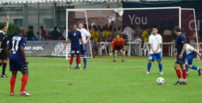
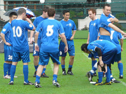
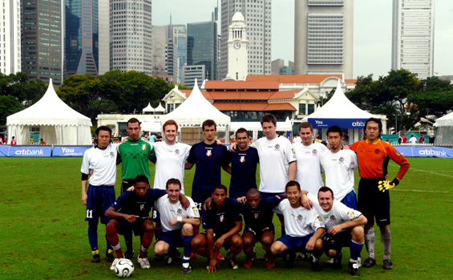

|
Singapore, Weekend 10/11th April.
Singapore - TML leader YC&AC 1st team gather some invaluable experience playing in the Singapore Cricket Club Soccer Sixes Tournament on Saturday, April10th.
Games against Singapore National Football League sides such as Singapore Cricket Club, Singapore Police and professional S-League club Etoile FC resulted in a 1 win 2 loss outcome which lead the team to the Plate Tournament in the afternoon. However, a Neil Shonhard goal against Etoile FC and Hidenori Yoshikoka winner against '07-'08 NFL champion Singapore Police definitely made the mark of the team's potential.
In the Plate Tournament, after overcoming Malaysian Johor Tigers 1-0 with an Anthony Savage goal, YC&AC faced Singapore Prison, another NFL side. Regular game ended scoreless, and while Shonhard was the only one to succeed after Savage and Joe Takeda both missing their penalty kicks, Singapore Prision scored all three kicks to secure their seat for the Plate final.
Although the final result fell out of favor, YC&AC didn't fail to stamp their authority in the South-East Asian football scenery. Great saves were displayed by goalkeeper Nobuhiro Kouka, while Matthew Taw, Kaname Shoot demonstrated solid defense. Savage's skills on the ball and tireless Russ Philps's stamina were a strength of the team as well as the sharp shooting of Shonhard and Yoshioka resulted in invaluable goals. Due to injury, Satoshi Mitsuda and Matthew Wallace played limitedly, although whenever they had their presence on the pitch, both played effectively and added composure to the team.
YC&AC will be back to TML competition for their title hunt, looking forward to claim as league and cup winners with some more confidence.
[Results]
(Group C)
-YC&AC 0 vs 3 Singapore Cricket Club
-YC&AC 1 vs 4 Etoile FC / goal:Neil Shonhard
-YC&AC 1 vs 0 Singapore Police / goal: Hidenori Yoshioka
(Plate Tournament)
-YC&AC 1 vs 0 Johor Tigers / goal: Anthony Savage
-YC&AC 0(PK1) vs 0(2) Singapore Prison Sports Club
[Team(number / name)]
1 / Nobuhiro Kouka(GK)
4 / Neil Shonhard
5 / Russ Philp
6 / Matthew Taw
7 / Joe Takeda
8 / Anthony Savage
9 / Satoshi Mitsuda
10 / Matthew Wallace
11 / Hidenori Yoshioka
20 / Kaname Shoot
Tournament Official Website: http://www.sccsoccersixes.com/index.html
Report by Joe Takeda

|